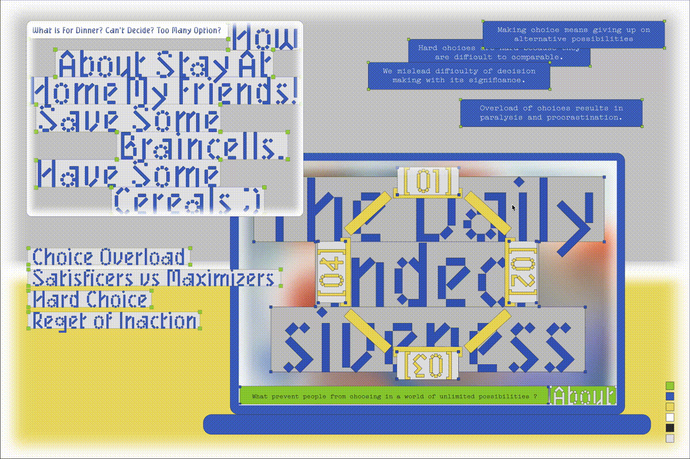
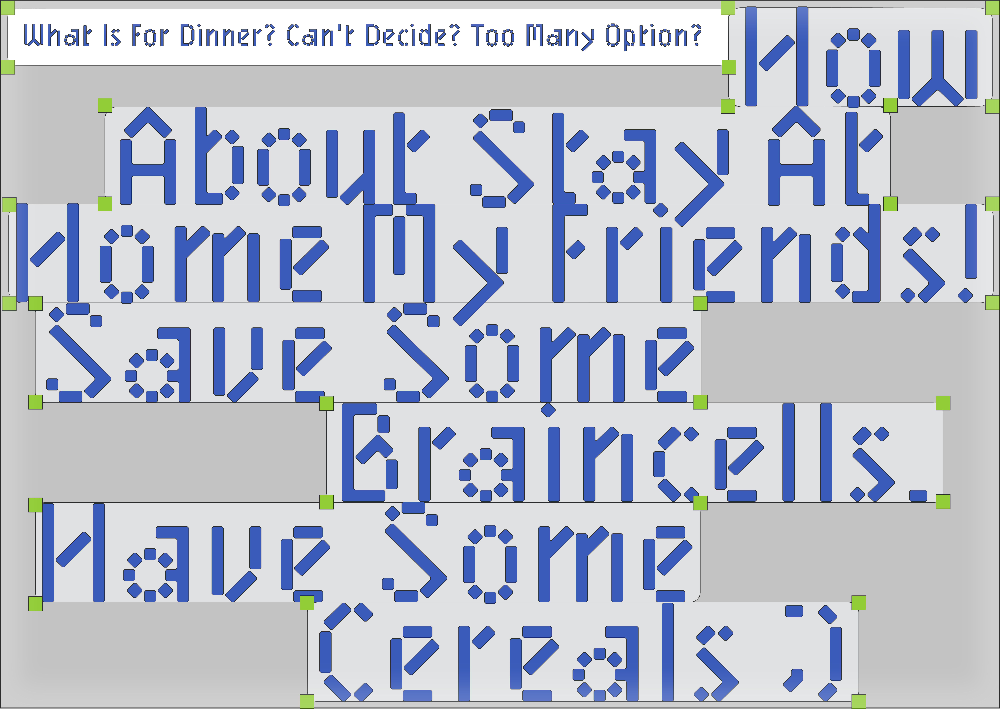
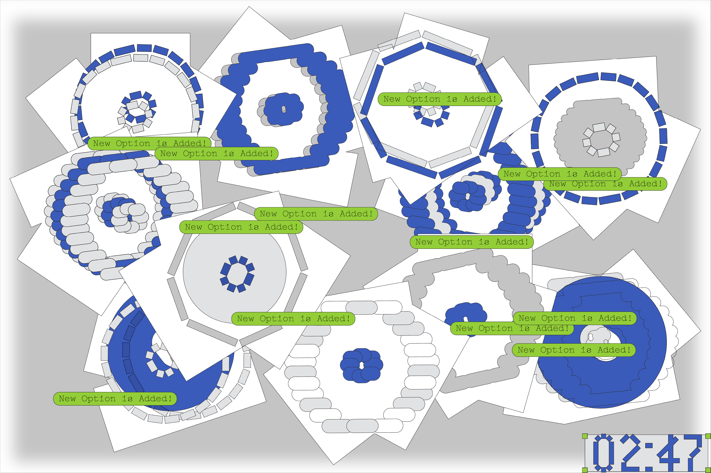
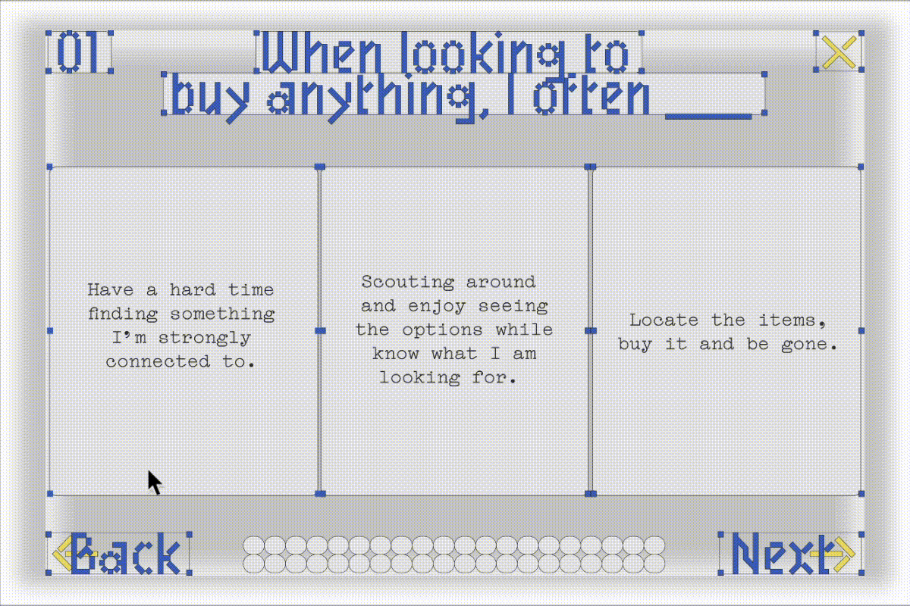
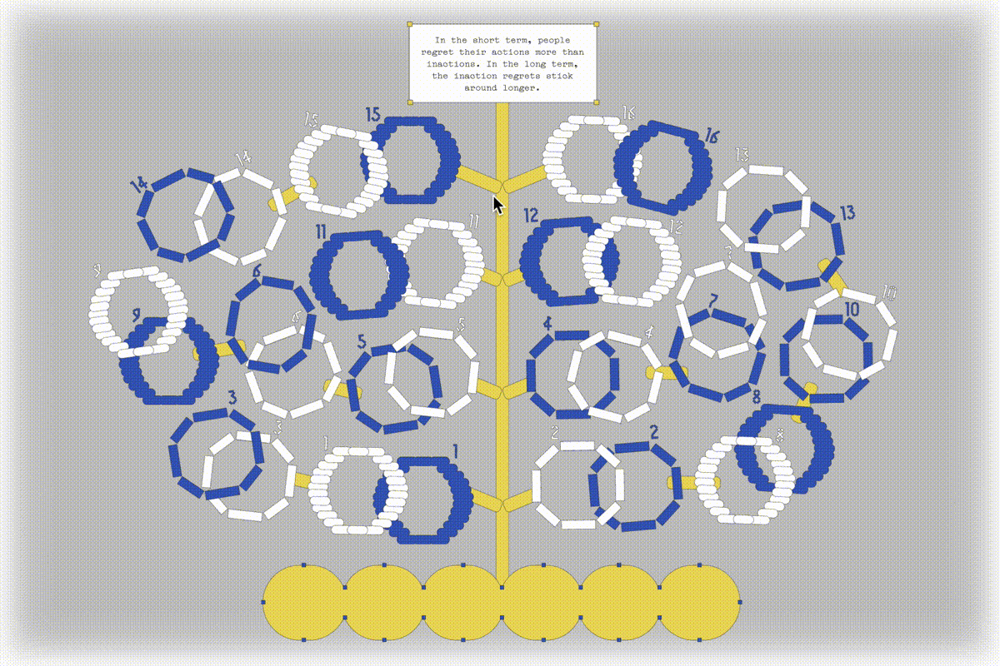

If you think about it, favicon - a website tab icon - is like a mini canvas on your computer screen. As a blank canvas, there is room for creativity. Yet, most websites only use it to hold static icons. Favicam is a personal project that pushes the limits of the favicon and what can be put on the computer's smallest canvas.
<<<
Click here to explore Favicam>>>

Food First, Everything Else Second. FPDB is a leading food
photography studio from Ho Chi Minh city. The studio has a long
passionate history for food and its spiritual influences to
culture.

With the Food First approach as the starting point of every FPDB
photography project, the stylized “F” represents the brand's
spirit. Its freeform contrasts with geometric letters, implying
creativity and professionalism. The intentional staggered
composition breaks up similar-sounding letters and helps with
comprehension. In other words, FPDB ≠ FBDP.


A series of food emojis is created and embedded into the
brand font system as glyphs so every employee of FPDB—even
creatively-challenged ones—can express the brand's love of food.


Credit / Co-deisnger: Tuan Ha / Superviser: Tuan Le / Client: FPDB

Questions like "What is for dinner?" or "Which shampoo should I pick?" are supposed to be easy, except they are universally proven to be unexpectedly hard. In today's world of unlimited options promoted by overconsumption, alongside the 35,000 conscious choices that an average adult needs to make every day, there is a psychological heaviness to decision-making. If the choice is not perfect, it is easy to imagine that you could have made a different choice for a better result. This puts pressure on even the most insignificant daily decisions.

Understanding the factors that influence unexpectedly hard choices in a world of unlimited possibilities is important for understanding what decisions are being made. For my thesis, I examine the factors of hard choices through "The Daily Indecisiveness," a series of four informational and interactive digital explorations, to understand the behavioral science of decision-making by visualizing common patterns that influence hard choices.

The first, Choice Overload, inspects the amount of options offered
and whether more options help or hinder decision making.

The second, Satisficers vs Maximizers, reveals your decision
making style and how it contributes to indecisiveness.

The third exploration, Hard Choice, considers the consequence of
choice and if knowledge of consequence makes the decision easier.

Finally, Regret of Inaction asks people to reflect on past
regret of action and inaction to find a pattern in decision
making.
Credit / Superviser: Matt Barnes and Juliette Cezzar / BFA CD
Thesis

Merry Christmas! This is the first Christmas after a long year of
pandemic is a special event to celebrate. We brought a playful and
nostalgia holiday through the concept of Santa Workshop to Bakes
Saigon and reimagined festive holiday patterns as packaging.
Elements for packaging feature Santa’s factories where Bakes
hardworking elf prepare delicious pastries for the special day.

Ornaments don't just belong on trees.

Candy cane, as a box for cookies.

Boardgame designers are the most underrated designers of all time.

Twinkle twinkle little box of pastries.

Tea boxes in the shape of pine trees.


Credit / Co-deisnger: Tran N Nguyen, Andree Nguyen / Superviser:
Tuan Le / Client: Bakes Saigon
The project is a study of sine/cosine waves and noise in p5.js, with the final form being a collection of 100 generative framed butterflies. The forming process is like a butterfly going through different peculiar phases before transforming into a beautiful thing. The live script is available upon request.


Credit: / Superviser: John Provencher / Project: A-Generative-Web

Bakes Mooncake 2021 is an excuse to celebrate in the middle of
Covid lockdown. Colorful. Vivid. A lucid dream. The ability to go
anywhere in your mind when your body is stuck in one place.
Using elements of party but bring it to the home. The champaigne,
the truffle and saffron,the glamorous light.

The design balances snobbery with a vivid and playful illustration
system.

Mooncake lantern patterns are reinterpreted it to brochures,
recipe books and bags. For fun.
Different ways people could spend time at home and how our
mooncakes can make it more fun: WFH, Covid Parties, Netflix n'
Chilling, Video Games.


Credit: / Superviser: Tuan Le / Co-Designer: Trang Dinh, Tuan Ha

When searching for dietary supplement, customers prefer getting informed
online when they feel the first symptoms, what the diagnosis means
and its implications, even before going to see a doctor. Though
without professional help, health literacy is a major issue when
looking for supplements. Understand health information can be
challenging for all age, McKinsey German researchers approached The
Lab's design team for an interface design for their new
self-serving supplement scanner booth at some of the biggest
pharmacy chains in German.

Customers can access health information from multiple sources and make informed decisions about their care. However, older generations oftern face challenges such as accessing technology, understanding medical information, determining the credibility of information, and limited access to pharmacists or professional help. In light of these challenges, pharmacies should position themselves digitally as advisors and true sources of information that help patients resolve doubts, understand the indications of their therapeutic regimen, and avoid self-medication while addressing shortages of pharmacists. Additionally, the experience of visiting a pharmacist and using new technology should be enjoyable for the general public, including older generations.

Understanding the customer journey and how they approach supplements and pharmacies is essential for designing the use of our medical database and anticipating customer needs as they move through different touchpoints with our brand or establishment. After identifying customer needs and opportunities for optimization through our solution and database, we pinpointed the most significant issues that impede the customer's mission during their visit to the pharmacy and decision-making process. When conducting online research, customers often feel confused by the abundance and complexity of information, so they turn to pharmacists for solutions to medical issues. Unfortunately, due to a shortage in medical staff, they are left disappointed by the limited one-on-one assistance.

Users need a time-saving and simplified experience when visiting a pharmacy. So, we developed an initial app structure for HelpScan. It uses six simple steps wireframe to search, diagnose common symptoms, and receive medication or scan current supplements.

Combining the need for personalized care and an enjoyable experience, the design concept for HelpScan is on gamification. This turns crucial decisions at each step into body parts of a medical mascot. As users make decisions and have unique needs, the body parts will be assembled to create a HelpScan mascot that provides recommendations for supplements and additional health advice or resources. The design also takes inspiration from the shape of pills and common medical supplies, and the mascot's motion is based on healthy exercises to boost daily strength.

With the help of our third-party database to categorize and redesign the information to be more friendly for the general public, we designed the app with a minimal and linear interface approach, step-by-step directions with a voice-over, and by integrating playful design details. Each screen is reduced to 4-5 actions with little to no hidden information to prevent the user from getting lost in the linear app. Immediate support can be sparked with a simple click to chat with a customer center representative. The kiosk is available 24/7 for needs outside of working hours, along with online customer support.

Step 1: Welcome Page & Step 2: Scan Supplement

Step 3: Confirm Scan & Step 4: Alternative Supplement

Step 5: Finalize Choice & Step 6: Sent prescription via
SMS/Email or to Counter
We wrapped up the process by testing the high-fidelity prototype with real users. Reaching out to a few of the users from the interviews helped us speed the recruiting process. After we guided the customer through the screens, we updated the designs based on their feedback.
<<<
Click here for high-fidelity prototype >>>
Credit: / Superviser: Tuan Le /
Co-Designer: Trang Dinh / Research and Database: McKinsey Berlin

Love is Hard is the 3rd national campaign about the HIV prevention
in Vietnam. This year, we are focusing on PREPs, a medicine taken
to prevent getting HIV. With the focus on LQBTS, the campaign is
on contrasted the ups and downs of love with the mundane
simplicity of HIV prevention. (It's just a pill.)

Part 1 of the campaign is on the documentation on LGBTQ love. To
gather inspiration for this year's HIV awareness campaign, we
asked the mostly LGBTQI+ community to send us their real stories
about love. We expected 100. We received over 1500 real stories
submittion. The stories are so impactful taht we decided to edit
and compile 1096 complete stories into 3 volumes.
<<<
Click here for view Vol1,
Vol2,
Vol3 >>>
Part 2 of the campaign is a series of posters on the dramatize the
trials and tribulations of love. The art direction is inspired by
traditional Vietnamese Ðông Hồ painting style, often featuring
traditional value, social philosophies, and humanitarian desires.
The concept of Love is Hard contrasts with the simplicity of
drinking a pill to prevent HIV, while the traditional style of
Ðông Hồ exposes the barriers of love in Vietnam society.

Part 3 and 4 of the campaign includes a music film and an art
exhibition called "The Museum of Heartbreak”, which features 10
contemporary artists produced installations, inspired by our love
stories.
<<<
Click here for full campaign summary >>>

Credit: / Superviser: Tuan Le / Co-Visual Direction: Reo Le /
Co-Designer: The Lab Creative Team